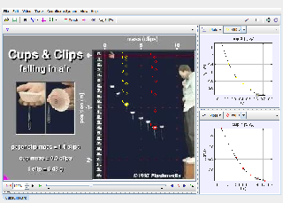

Tracker Experiment
This video shows a set of cupcake cups dropped from rest. The cups have paper clips attached to give them mass and stability. They all have the same area and shape but their mass depends on the number of paper clips attached. As they fall, the air resistance force causes them to approach terminal velocity.
Analysis:
- Draw a force diagram for a cup when it is first released (v = 0).
- Draw a force diagram for the same cup when it has reached its terminal velocity.
- Note in the graphs on the right that cups 3 and 7 approach different terminal velocities. Why does the terminal velocity depend on mass?
- What do you think will be the terminal velocity for cup 1? Create a new point mass, track cup 1 with the mouse, and look at its vy-t graph to see how close you got.
Author: Douglas Brown
Contact: dobrown@cabrillo.edu